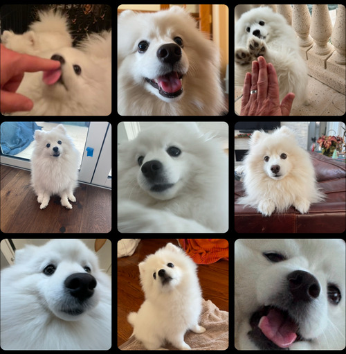

<div class="textcontainer">
<h3>About Me</h3>
<p class="margin"> </p>
<div class="center-row">
<img src="./about-me.jpg" alt="placeholder for you about me image">
<p id="aboutme">
Hello!
<br>
My name is Madison Davis.
<br>
Class: 2026
<br><br>
Concentration: Computer Science
<br><br>
House: Mather
</p>
</div>
<br></br>
I love to draw, hike, dance, and cook (when it doesn't blow up).
I have an affinity for alpacas, Pinnochio's Sicilian cheese pizza, escape rooms, and more!
<br>
I'm coming into this class to learn how to "build things" apart from software.
<br></br>

<br></br>
I have two dogs. Their names are Poko (middle left) and Togo (middle right).
<br>
One has a brain. The other doesn't have a thought behind those eyes.
<br></br>
<video width="640" height="480" controls>
<source src="temp-video.mp4" type="video/mp4">
</video>
</div>